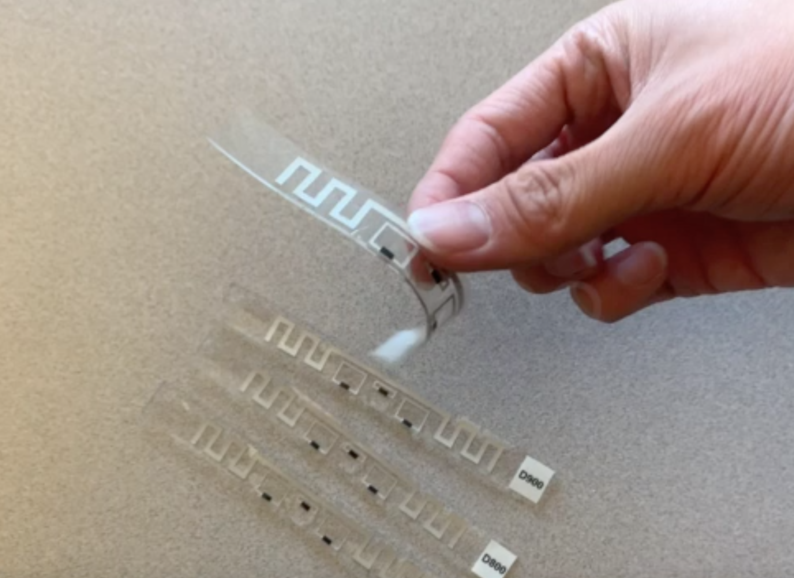

|
 |
|
|
| This project aims to ask: Can we connect to battery-free devices over extremely long distances? We develop the state-of-the-art longest range connectivity solution for completely battery-free commercial RFID tags, by exploiting collaboration between many distributed RFID readers. We explore several opportunities that such a system can produce. Imagine being able to track the location of every object around you over extended distances, by simply attaching a battery-free sticker. The WiTech lab's research has developed solutions for smart infrastructure monitoring, gesture-based interfaces and on-body sensing using battery-free networks. |
- TranQuiL: Long Range Detection and Localization of RFI in Radio Quiet Zones, Atul Bansal, Mohamed Ibrahim, Kuang Yuan, Yiwen Song, Swarun Kumar and Bob Iannucci, Radio Science 2026 [PAPER] [WEBSITE]
- Towards Ubiquitous IoT through Long Range Wireless Energy Harvesting, Mohamed Ibrahim, Atul Bansal, Kuang Yuan, Junbo Zhang, and Swarun Kumar, MobiHoc 2024 [PAPER] [WEBSITE]
- TranQuiL: Long Range Detection and Localization of RFI in Radio Quiet Zones, Atul Bansal, Mohamed Ibrahim, Kuang Yuan, Yiwen Song, Swarun Kumar and Bob Iannucci, RFI (Oral) 2024 [WEBSITE]
- Battery-free Wideband Spectrum Mapping using Commodity RFID Tags, Mohamed Ibrahim, Atul Bansal, Kuang Yuan, Swarun Kumar and Peter Steenkiste, MobiCom 2023 [PAPER] [WEBSITE]
- NFCapsule: An Ingestible Sensor Pill for Eosinophilic Esophagitis Detection Based on Near-field Coupling, Junbo Zhang, Gaurav Balakrishnan, Sruti Srinidhi, Arnav Bhat, Swarun Kumar and Christopher Bettinger, SenSys 2022 [PAPER] [WEBSITE]
- PLatter: On the Feasibility of Building-scale Power Line Backscatter, Junbo Zhang, Elahe Soltanaghaei, Artur Balanuta, Reese Grimsley, Swarun Kumar and Anthony Rowe, NSDI 2022 [PAPER] [WEBSITE]
- Exploring mmWave Radar and Camera Fusion for High-Resolution and Long-Range Depth Imaging, Akarsh Prabhakara (Co-Primary), Diana Zhang (Co-Primary), Chao Li, Sirajum Munir, Aswin Sankaranarayanan, Anthony Rowe and Swarun Kumar, IROS 2022 [PAPER] [SLIDES] [WEBSITE]
- Toolbox Release: A WiFi-Based Relative Bearing Sensor for Robotics, Ninad Jadhav, Weiying Wang, Diana Zhang, Swarun Kumar and Stephanie Gil, IROS 2022 [PAPER] [WEBSITE]
- Ultra Low-Latency Backscatter for Fast-moving Location Tracking, Jingxian Wang, Vaishnavi Ranganathan, Jonathan Lester and Swarun Kumar, UbiComp 2022 [PAPER] [WEBSITE]
- Osprey: A mmWave Approach to Tire Wear Sensing, Akarsh Prabhakara, Vaibhav Singh, Swarun Kumar and Anthony Rowe, MobiSys 2020 (Best Paper Honorable Mention) [PAPER] [SLIDES] [WEBSITE]
- Osprey Demo: A mmWave Approach to Tire Wear Sensing, Akarsh Prabhakara, Vaibhav Singh, Swarun Kumar and Anthony Rowe, MobiSys 2020 [PAPER] [WEBSITE]
- Poster - NoFaceContact: Stop Touching Your Face with NFC, Junbo Zhang and Swarun Kumar, MobiSys 2020 [PAPER] [WEBSITE]
- Poster: Does Ambient RF Energy Suffice to Power Battery-free IoT?, Atul Bansal, Swarun Kumar and Bob Iannucci, MobiSys 2020 [PAPER] [WEBSITE]
- RFID Tattoo: A Wireless Platform for Speech Recognition , Jingxian Wang, Chengfeng Pan, Haojian Jin, Vaibhav Singh, Yash Jain, Jason Hong, Carmel Majidi and Swarun Kumar, UbiComp 2020 (Best Wearables Long Paper) [PAPER] [WEBSITE]
- You foot the bill! Attacking NFC with passive relays, Yuyi Sun, Swarun Kumar, Shibo He, Jiming Chen and Zhiguo Shi, IEEE IoT Journal 2020 [PAPER] [WEBSITE]
- Silver-Coated PDMS Beads for Soft, Stretchable, and Thermally Stable Conductive Elastomer Composites , Chengfeng Pan, Yun Sik Ohm, Jingxian Wang, Michael J. Ford, Kitty Kumar, Swarun Kumar, and Carmel Majidi, ACS applied materials and interfaces 2019 [PAPER]
- Sozu: Self-Powered Radio Tags for Building-Scale Activity Sensing , Yang Zhang, Yasha Iravantchi, Haojian Jin, Swarun Kumar, and Chris Harrison, UIST 2019 [PAPER] [WEBSITE]
- Pushing the Range Limits of Commercial Passive RFIDs , Jingxian Wang, Junbo Zhang, Rajarshi Saha, Haojian Jin, Swarun Kumar, NSDI 2019 [PAPER] [WEBSITE]
- WiSh: Towards a Wireless Shape-aware World , Haojian Jin, Jingxian Wang, Zhijian Yang, Swarun Kumar, Jason Hong, MobiSys 2018 [PAPER] [WEBSITE]
- Towards Wearable Everyday Body-Frame Tracking , Haojian Jin, Zhijian Yang, Swarun Kumar, and Jason Hong, UbiComp 2018 (Best Demo Honorable Mention) [PAPER] [SLIDES] [WEBSITE]
- PI: Swarun Kumar
- Students: Jingxian Wang, Haojian Jin and Junbo Zhang
- Collaborators: Prof. Jason Hong, Prof. Carmel Majidi and Prof. Chris Harrison